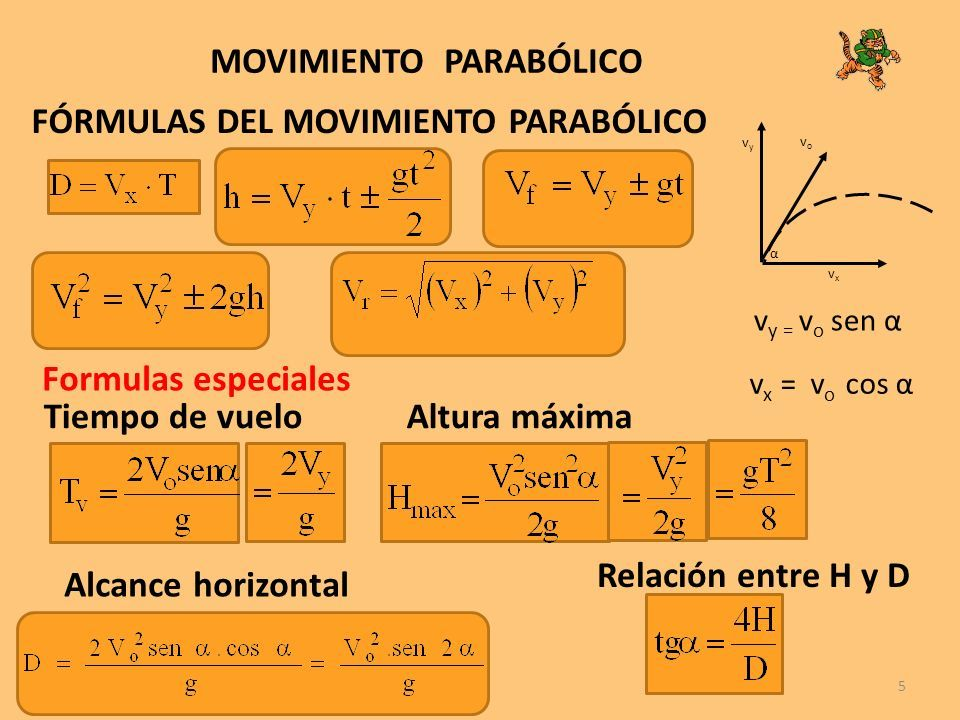

Galileo Galilei estudio y dedujo ecuaciones del tiro de proyectiles. El tiro parabólico es un movimiento que resulta de la unión de dos movimientos: El movimiento rectilíneo uniforme (componentes horizontal) y, el movimiento vertical (componente vertical) que se efectúa por la gravedad y el resultado de este movimiento es una parábola.
El tiro parabólico, es la resultante de la suma vectorial de un movimiento horizontal uniforme y de un movimiento vertical rectilíneo uniformemente variado. El tiro parabólico es de dos clases: a) tiro horizontal y, b) tiro oblicuo
a)Tiro Horizontal
Se caracteriza por la trayectoria curva que sigue un
cuerpo al ser lanzado horizontalmente al vació.
el resultado de dos movimientos independientes: un
movimiento horizontal con velocidad constante y un
movimiento vertical que se inicia con una velocidad 0 y va
aumentando, en proporción de otro cuerpo que se dejara
caer del mismo punto en el mismo instante.
b) Tiro oblicuo
Se caracteriza por la trayectoria que sigue un
cuerpo, cuando es lanzado a una velocidad
inicial que forma un ángulo 𝜃 con el eje
horizontal.
FORMULAS DEL TIRO PARABOLICO COMPLETO
